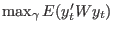

| [ < ] | [ > ] | [ << ] | [ Up ] | [ >> ] | [Top] | [Contents] | [Index] | [ ? ] |
Dynare has tools to compute optimal policies for quadratic
objectives. You can either solve for optimal policy under commitment
with ramsey_policy or for optimal simple rule with osr.
Description
This command computes optimal simple policy rules for linear-quadratic problems of the form:

such that:
where:
The parameters to be optimized must be listed with osr_params.
The quadratic objectives must be listed with optim_weights.
This problem is solved using a numerical optimizer.
Options
This command accept the same options than stoch_simul
(see section Computing the stochastic solution).
This command declares parameters to be optimized by osr.
This block specifies quadratic objectives for optimal policy problems
More precisely, this block specifies the nonzero elements of the
quadratic weight matrices for the objectives in osr.
A element of the diagonal of the weight matrix is given by a line of the form:
VARIABLE_NAME EXPRESSION; |
An off-the-diagonal element of the weight matrix is given by a line of the form:
VARIABLE_NAME, VARIABLE_NAME EXPRESSION; |
Description
This command computes the first order approximation of the policy that maximizes the policy maker objective function submitted to the constraints provided by the equilibrium path of the economy.
The planner objective must be declared with the
planner_objective command.
Options
This command accepts all options of stoch_simul, plus:
planner_discount = DOUBLEDeclares the discount factor of the central planner. Default: 1.0
Note that only first order approximation is available (i.e.
order=1 must be specified).
Output
This command generates all the output variables of stoch_simul.
In addition, it stores the value of planner objective function under
Ramsey policy in oo_.planner_objective_value.
This command declares the policy maker objective, for use with
ramsey_policy.
| [ < ] | [ > ] | [ << ] | [ Up ] | [ >> ] |
This document was generated by Sébastien Villemot on May 24, 2011 using texi2html 1.82.